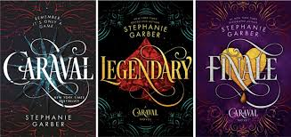

book blog
book reccomendations
1.a magical world with magical stories and characters - caraval by stephanie garber
stephanie garber’s caraval is a literary enchantment — a dazzling, high-stakes fantasy that grips you from the very first page and never lets go. with lush prose, irresistible mystery, and a world so vivid it practically breathes, garber crafts an unforgettable tale of wonder, illusion, and fierce sisterly love.
from the moment readers step into the magical game of caraval, they're swept away on a whirlwind adventure filled with twists, secrets, and breathtaking surprises. scarlett, the brave and determined heroine, is compelling and deeply relatable, and her bond with her sister tella adds a rich emotional depth to the story. the world garber has created is darkly whimsical — think the night circus meets alice in wonderland, with a touch of fairy tale danger.
but what truly elevates caraval is its brilliant balance of heart-pounding suspense and lyrical beauty. garber's writing is intoxicating — poetic without being overindulgent, and rich with color, emotion, and atmosphere. every chapter ends like a curtain drop, leaving you desperate to know what comes next.
a masterclass in immersive storytelling, caraval isn't just a book — it's an experience. it's the kind of story that leaves you questioning reality, whispering "remember, it's only a game"... even when you know it’s so much more than that.

2.a dreamy and fantastical fairytale- once upon a broken heart by stephanie garber
once upon a broken heart is a heart-stealing, soul-stirring sequel series to "caraval" that proves stephanie garber is a queen of whimsical fantasy. with every page, she draws readers deeper into a glittering world of cursed kisses, enchanted destinies, and the most seductive of villains — the prince of hearts himself.
at its core, this story is a hauntingly beautiful tale of love, betrayal, and the desperate hope that maybe, just maybe, broken hearts can still dream. evangeline fox is a captivating new heroine — curious, brave, and achingly romantic. her journey is both magical and emotional, as she navigates a world where stories come to life and deals with fate are rarely what they seem.
garber's prose is pure enchantment — lyrical, rich, and utterly immersive. the setting feels like stepping into a fairytale that's slightly off-kilter, where beauty and danger coexist in every shadow. and of course, jacks — the enigmatic prince of hearts — is everything a reader could ask for: charming, cruel, heartbreaking, and impossible to resist.
what makes once upon a broken heart truly unforgettable is its emotional depth beneath all the glitter and glamor. it speaks to anyone who’s ever longed for something more, believed in the power of stories, or loved someone they shouldn't.

3.an intoxicating dive into the world of fantasy politics - the cruel prince by holly black
the cruel prince is a fierce, mesmerizing fantasy that grabs you by the throat and refuses to let go. holly black has created a wickedly enchanting world, filled with beauty, danger, and political intrigue that keeps you breathless from beginning to end.
jude duarte is a phenomenal protagonist — flawed, cunning, and unapologetically ambitious. in a world that doesn’t want her, she claws her way toward power, and watching her navigate the treacherous court of elfhame is nothing short of exhilarating. her complicated dynamic with prince cardan is electric, twisted, and utterly captivating.
black’s writing is sharp and lyrical, painting the fae world in vivid, thorny detail. every scene drips with tension and atmosphere, from glittering feasts to brutal betrayals. it’s a story where nothing is quite as it seems, and everyone has something to hide.
what truly sets the cruel prince apart is its boldness — the way it embraces moral grayness, challenges fantasy tropes, and gives us a heroine who isn’t afraid to get her hands dirty. it’s smart, seductive, and deliciously ruthless.

4.a brilliant, mind-bending heist - six of crows by leigh bardugo
six of crows is everything you could want in a fantasy novel — clever, dark, and heartbreakingly human. leigh bardugo doesn’t just write a story, she builds a world so vivid and layered it feels like it could swallow you whole. from the icy streets of ketterdam to the high-stakes halls of scheming and betrayal, every detail is rich and alive.
at the heart of this novel is a crew of criminals you’ll fall head over heels for. kaz brekker, the ruthless mastermind with a broken past, is as magnetic as he is dangerous. inej, the silent and sacred wraith, nina and matthias with their enemies-to-lovers tension, wylan’s sweet brilliance, and jesper’s charm and chaos — each one is unforgettable. the character work here is pure gold.
bardugo’s writing is razor-sharp and emotionally raw. the plot moves with the precision of a clockwork mechanism, filled with twists, turns, and the kind of high-stakes action that keeps your heart pounding. but beneath the grit and danger is a surprising tenderness — a story about trust, survival, and found family.

5.a beautifully broken story - shatter me by tahereh mafi
shatter me is a stunning, emotional ride that feels like falling into a fever dream. tahereh mafi’s writing is raw, lyrical, and completely unique — every sentence pulses with feeling, and every thought juliette has is like a fragile, fractured truth scratched onto the page.
juliette is a deeply vulnerable yet incredibly strong heroine. her journey from terrified girl to empowered young woman is both heartbreaking and inspiring. her voice is unforgettable — haunted, poetic, and achingly real. and then there’s warner, whose presence electrifies the pages with tension and mystery, and adam, who brings tenderness and light in a world that feels like it’s constantly falling apart.
mafi crafts a dystopian world that’s cold and cruel, but laced with hope. the way she uses language — the strikethroughs, the repetition, the rhythm — makes the story feel alive in a way few books do. it’s not just storytelling, it’s art.

blog created by bianca nicolae
last edit apr 17, 2025